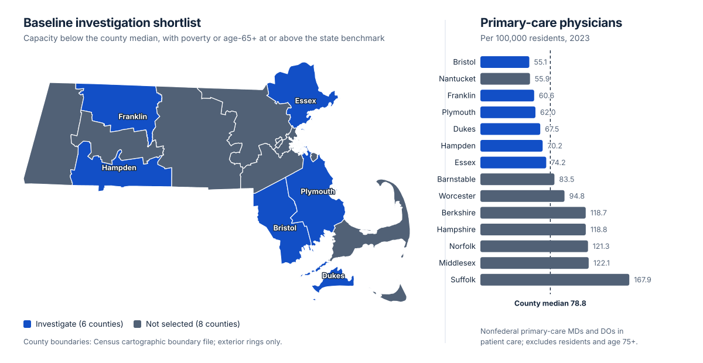

Massachusetts Primary Care Access Planning
County-level planning analysis combining Census/ACS and HRSA public data to identify where primary-care access warrants deeper investigation. Franklin and Hampden remained on the shortlist across eight parameter settings, which produced five distinct shortlist outcomes.
